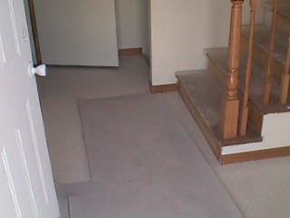

The sod lines out in these strip developments are pretty comical.
I don't know if they're going to try to lay my sod this fall or not.
My front and rear lawns have been scraped for the sod now though.
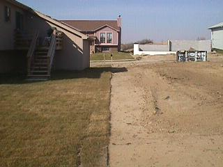
From the entryway... You can barely see the linoleum here. Next
comes the carpet in the great room, all the upstairs rooms, and
downstairs. I also need the tile around the fireplace and the hearth.
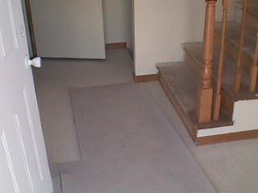
The kitchen... You can sort of see the linoleum. The
countertops look great, but you can't really see those here.
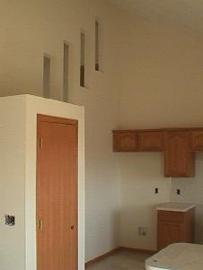
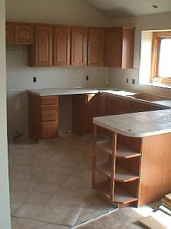
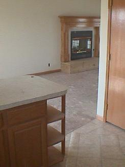
The great room...
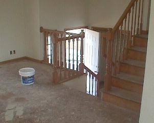
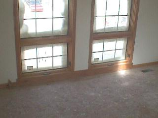
The master bathroom with my intentionally objectionable flooring
and black marble-esque streaks in the sink.
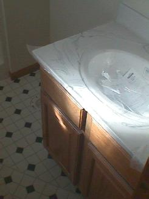
Miscellaneous shots of the freshly stained trim. Look at all that
closet space I'll never use!
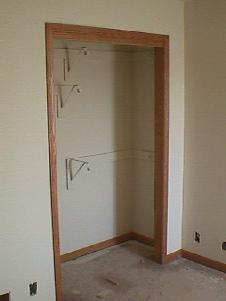
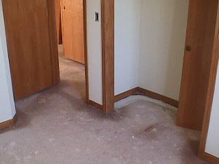
All my lighting and fans in a nice pile downstairs.
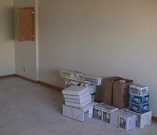
Wiring strung out all over the place...
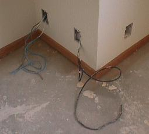